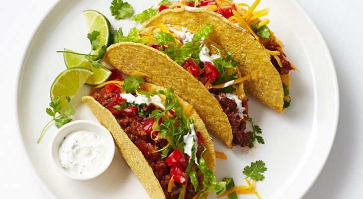

5 Delicious Foods You Should Eat in Mexico
Posted on March 31, 2018 at 2:11 PM
Diverse, Simple and certainly Delicious; these are the words that we can easily associate with Mexican Dishes. Mexico is a brilliant choice for foodies itching to try exotic and exciting dishes. Defined by fresh flavors and unexpected combinations, authentic dishes in Mexico will surely surprise anyone in a captivating way. A great misconception among people is that Mexican dishes are all about just tacos and burritos, but that just scratched the surface of Mexico’s incredible cuisine. And we at Traveler’s Foodbox are here to provide a list of excellent flavours and dishes the lovely county of Mexico has to offer.
1. Quesadilla
Starting the list with cheese lover’s delight, we have the Quesadilla. It resembles the infamous Taco in many ways but instead of meat and spices, authentic Quesadilla are filled with cheese and then grilled or toasted. Cheesy and savory each bite guarantees a fiesta in your mouth!
2. Tortas
Next on the list is a big contender for the world’s best sandwiches. Mexicans proudly give us the mouth drooling and stomach filling Tortas. This meaty delight often contains meat garnished with mashed avocado, with an authentic Mexican sandwich spread made of black beans or refried beans, pickled jalapenos, lettuce, tomato, and an onion. A glance from this tasty dish will make you immediately want to stuff it into your mouth until it’s gone.
3. Elote
Another dish that reflects Mexican’s simplicity and creativity, we chose Elote to be 3rd on our list. You can find Elote basically everywhere in Mexico’s streets. Elote is Mexican name for corn on the cob, it simply is a corn that is traditionally boiled and served either on a stick and meant to be eaten like an ice-cream. Mexican makes everything special as salt, chilli powder, lime, butter, cheese mayonnaise and sour cream are added in every cobs for an explosive flavor. Expect to find it at every street food stalls especially at festivals.
4. Enchiladas

Next we have the Enchiladas, another tortilla-based dish that is loved and enjoyed by Mexicans and Foodies. These delicious rolls are Corn tortillas that are rolled and stuffed with various ingredients such as potatoes, cheese, meat, seafood and vegetables and dripped over with chilli pepper sauce. These yummy delights are a household favorite and everyone should at least try Enchiladas when in Mexico.
5. Taco
Ending the list with a classic dish that has been known and loved by billions of people, we advise you to not miss the authentic Tacos in Mexico. This historic dish has been a traditional comfort food for Mexicans and it certainly deserves each inch of its reputation. These small and delicious surprise are crispy corn tortillas folded to make a half moon shape which then filled with meat, or cheese and are garnished with salsa, cilantro, avocado, onion, tomato, or lettuce. You can never go wrong; Tacos are Mexicans greatest gift to mankind.
Categories
Recommended

5 New Zealand Foods That You and Kiwis Will Enjoy
by Shann Kirby Locsin

Top 5 Foods You Should Try If You're in India
by Jomari Ondap

Delicious and Artistic dishes anybody should try in Japan
by Erickson Javier